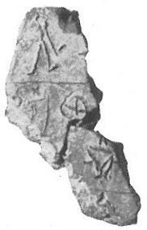
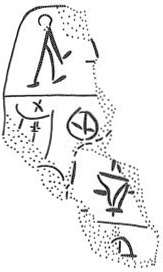

| side.line | statement | logogram | number | fraction |
| .1 | PU-•[ | |||
| _____________________________________________________________________ | ||||
| .2 | ] DU -KA[ | |||
| .3 | ][••] | *401VAS+ RA {*652}[ | ||
| _____________________________________________________________________ | ||||
| .4 | ] • [ | |||
| infra mutila | ||||
 *401VAS
resembles a cup
(pointed foot with horizontal base) with 2 short horizontal handles. Brice
identifies the vestige of another sign at right, but this is probably (to
JGY) the other horizontal handle of the vase.
*401VAS
resembles a cup
(pointed foot with horizontal base) with 2 short horizontal handles. Brice
identifies the vestige of another sign at right, but this is probably (to
JGY) the other horizontal handle of the vase.
Commentary © John Younger